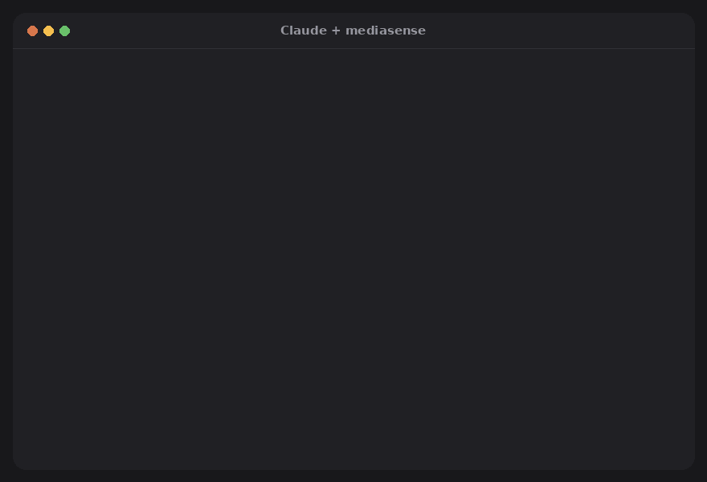

mediasense
Give Claude ears and eyes for video and audio
Claude can't open a TikTok, a YouTube video or an Instagram reel on its own. mediasense is a free, open-source MCP server that lets it: paste a link (or point at a file) in Claude Desktop or Claude Code and ask in plain language. Claude gets the transcript with a timestamp for every word, the key frames of each shot, and tools to cut and edit. Everything runs on your computer.

Real output for a 17-second TikTok by @elim.doc, shown with the creator's permission.
What you can ask Claude
summarize this https://www.tiktok.com/@someone/video/7350…
what does he show at 0:30? and what tool is he talking about?
clean up ~/Desktop/podcast.m4a — remove the "um"s and long pauses
make short captions for ~/Videos/reel.mp4
put intro.mp3 under the first 5 seconds of talk.mp4, duckedFeatures
| Summarize videos | TikTok, YouTube, Instagram, X, Vimeo and ~1,800 other sites, or any local audio/video file. |
| Transcribe | About 99 languages with faster-whisper, a timestamp for every word, voice-activity filtering and vocabulary hints for names and jargon. |
| See the video | Key frames at scene changes and labelled contact sheets, so Claude can describe what is on screen. |
| Edit by text | Remove filler words, pauses or any sentence; Claude shows the cut list before rendering a new file. The original is never touched. |
| Subtitles | Export SRT, VTT, plain text, EDL or FCPXML for Premiere, DaVinci Resolve and Final Cut. |
| Place audio | Put music, a voice-over or a sound effect into a video at the right moment, with ducking. |
| Private | No account, no API key, no telemetry. Media and transcripts stay on your machine (privacy policy). |
| Fast on any PC | Works on CPU; NVIDIA GPU acceleration is an optional extra. |
Install
Windows (PowerShell):
irm https://raw.githubusercontent.com/joaoestella/mediasense/main/install.ps1 | iexmacOS / Linux:
curl -LsSf https://raw.githubusercontent.com/joaoestella/mediasense/main/install.sh | shThen quit Claude Desktop completely, open it again and ask "summarize this video: <link>". In Claude Code you can also install it as a plugin:
/plugin install mediasense --marketplace joaoestella/mediasenseAny other MCP client: uvx mediasense mcp (stdio).
Command line
mediasense understand https://youtu.be/… # transcript + shots + key frames
mediasense transcribe talk.mp4 --language pt
mediasense edit talk.mp4 --fillers --silences 0.6 --srt
mediasense export talk.transcript.json talk.srt talk.vtt